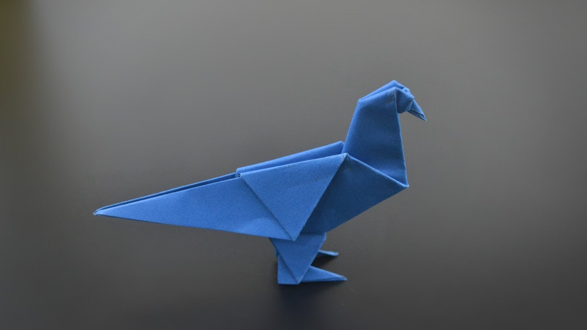
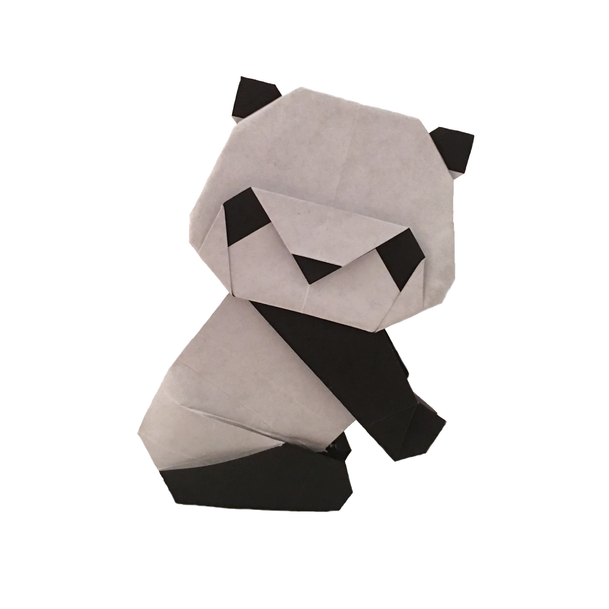

CLICK ON THE IMAGE TO MAKE THE ORIGAMI
Camels are mammals with long legs, a big-lipped snout and a humped back. There are two types of camels: dromedary camels, which have one hump, and Bactrian camels, which have two humps. Camels' humps consist of stored fat, which they can metabolize when food and water is scarce.
Pigeons are gentle, plump, small-billed birds with a skin saddle between the bill and forehead. All pigeons strut about with a characteristic bobbing of the head. Because of their long wings and powerful flight muscles, they are strong, swift fliers.

chameleon refers to a kind of small lizard with large, bulging eyes and a long tail. The most striking feature of a chameleon is its ability to change the colour of its skin to match its surroundings Most chameleons can be found in the wild in Africa, Madagascar and the Middle East.
Teddy bears have a depth of character that other toys don't have, and in playing with one a child brings it to life. The bear helps to stimulate and develop their imagination. “Teddy bears encourage this type of imaginative play by their very nature, in a way a gadget or electronic toy can't.”
Giant pandas have a distinctive black and white coat, with black fur around their eyes and on their ears, muzzle, legs and shoulders.

Cicadas are 1 - 1 1/2 inches long. They are stout with a green or brown body and black markings on the body. They have four, clear, fly-like wings and the first pair is much longer than their abdomen. The wings which are folded over their back look like a tent